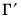

var declare var estimation object.
To declare a var use the keyword var, followed by a name and, optionally, by an estimation specification:
btvcvar estimate a Bayesian time-varying coefficients VAR specification.
bvar estimate a Bayesian VAR specification.
ec estimate a vector error correction model.
ls estimate an unrestricted VAR.
mfvar mixed frequency VAR.
switchvar switching VAR (including simple and Markov switching).
arlm serial correlation LM test.
arroots inverse roots of the AR polynomial.
coint Johansen cointegration test.
correl residual autocorrelations.
display display table, graph, or spool in object window.
endog table or graph of endogenous variables.
hdecomp perform historical decomposition for a standard VAR.
impulse impulse response functions.
jbera residual normality test.
label label information for the var object.
laglen lag order selection criteria.
output table of estimation results.
qstats residual portmanteau tests.
results table of estimation results.
rgmprobs display the regime probabilities in a switching VAR.
testexog exogeneity (Granger causality) tests.
transprobs display the state transition probabilities in a switching VAR.
white White heteroskedasticity test.
append append restriction text.
clearhist clear the contents of the history attribute.
copy creates a copy of the var.
drawcoefs draw from the posterior coefficient distribution.
drawrescov draw from the posterior error covariance distribution.
fit produce static forecasts from an estimated VAR.
forecast produce dynamic forecasts from an estimated VAR or VEC.
makecoefs create groups of the coefficient series used to make the BTVCVAR estimation output view.
makecoint make group of cointegrating relations.
makeess output effective sample sizes (ESSs) of the draws of the parameters in a BTVCVAR model.
makeif output inefficiency factors of the draws of the parameters in a BTVCVAR model.
makemodel make model from the estimated VAR or VEC.
makergmprobs save the regime probabilities from a switching VAR.
makerne output relative numerical efficiencies (RNEs) of the draws of the parameters in a BTVCVAR model.
maketransprobs save the state transition probabilities in a switching regression equation.
olepush push updates to OLE linked objects in open applications.
postdraws puts posterior draws of a BTVCVAR model in a new page.
setattr set the value of an object attribute.
svar estimate factorization matrix for structural innovations.
@eqncoef(k) number of estimated coefficients in equation
k.
@meandep(k) mean of the dependent variable in equation
k.
@r2(k) R-squared statistic for equation
k.
@rbar2(k) adjusted R-squared statistic for equation
k.
@sddep(k) std. dev. of dependent variable in equation
k.
@se(k) standard error of the regression in equation
k.
@ssr(k) sum of squared residuals in equation
k.
a(i,j) adjustment coefficient for the
j-th cointegrating equation in the
i-th equation of the VEC (where applicable).
b(i,j) coefficient of the
j-th variable in the
i-th cointegrating equation (where applicable).
c(i,j) coefficient of the
j-th regressor in the
i-th equation of the var, or the coefficient of the
j-th first-difference regressor in the
i-th equation of the VEC.
@aic Akaike information criterion for the system.
@detresid determinant of the residual covariance matrix.
@hq Hannan-Quinn information criterion for the system.
@lagcount number of lags included in the VAR.
@lagorder highest lag order included in the VAR.
@logl log likelihood for system.
@ncoefs total number of estimated coefficients in the var.
@neqn number of equations.
@nrestrict number of coefficient restrictions in the system.
@regobs number of observations in the var.
@sc Schwarz information criterion for the system.
@svarcvgtype integer indicating the convergence type of the structural decomposition estimation (structural VAR only): 0 (convergence achieved), 1 (convergence achieved, but first or second order conditions not met), 2 (failure to improve), 3 (maximum iterations reached), 4 (no convergence—structural decomposition not estimated).
@svaroverid over-identification LR statistic from structural factorization (structural VAR only).
@totalobs sum of
@eqregobs from each equation (“
@regobs*@neqn”).
@coefmat coefficient matrix (as displayed in output table).
@coefse matrix of coefficient standard errors (corresponding to the output table).
@cointadj matrix containing cointegrating variable adjustment coefficients

(where applicable).
@cointadjse matrix containing standard errors of cointegrating variable adjustment coefficients (where applicable).
@cointlr matrix containing long-run equilibrium coefficients

(where applicable).
@cointlrse matrix containing standard errors of long-run equilibrium coefficients (where applicable)
@cointse standard errors of matrix of cointegrating vectors (where applicable).
@cointsr matrix containing short-run adjustment coefficients  (where applicable).
@cointsrse matrix containing standard errors of short-run adjustment coefficients (where applicable).
@cointvec matrix of cointegrating vectors,

(where applicable).
@companion companion matrix for the full set of lag coefficients.
@impfact factorization matrix used in last impulse response view.
@lagcoefs coefficient matrix containing the full set of horizontally concatenated lag coefficient matrices.
@lagids vector of integers containing the lags used in estimation.
@lrrsp accumulated long-run responses from last impulse response view.
@lrrspse standard errors of accumulated long-run responses.
@postresidcov estimated posterior error covariance for Bayesian models; ordinary residual covariance, otherwise.
@residcov (sym) covariance matrix of the residuals.
@svaramat estimated
A matrix for structural factorization (structural VAR only).
@svarbmat estimated
B matrix for structural factorization (structural VAR only).
@svarcovab covariance matrix of stacked
A and
B matrix for structural factorization (structural VAR only).
@svarfmat estimated F matrix for long-run impulse responses (structural VAR only).
@svarrcov restricted residual covariance matrix from structural factorization (structural VAR only).
@svarsmat estimated S matrix for short-run impulse responses (structural VAR only).
@swcompanion(i) switching companion matrix for the full set of lag coefficients in regime
i (switching VAR only).
@swimpfact(i) switching factorization matrix for regime
i used in last impulse response view (switching VAR only).
@swlagcoefs switching coefficient matrix containing the full set of horizontally concatenated lag coefficient matrices for regime
i (switching VAR only).
@swlagcoefsum(i) sum of the switching lag coefficient matrices for regime
i (switching VAR only).
@attr("arg") string containing the value of the
arg attribute, where the argument is specified as a quoted string
.
@command full command line form of the estimation command. Note this is a combination of
@method and
@options.
@description string containing the VAR object’s description (if available).
@displayname returns the VAR’s display name. If the VAR has no display name set, the VAR’s name is returned.
@method command line form of the estimation method (“LS”, “BVAR”,
etc.)
@name returns the VAR’s name.
@options command line form of estimation options.
@remarks string containing the var object’s remarks (if available).
@smpl sample used for estimation.
@type returns a string with the object type: “VAR”.
@updatetime returns a string representation of the time and date at which the VAR was last updated.